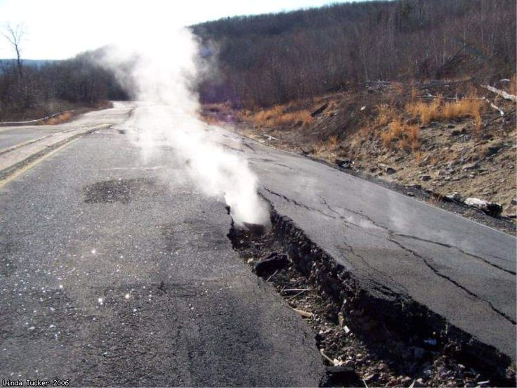
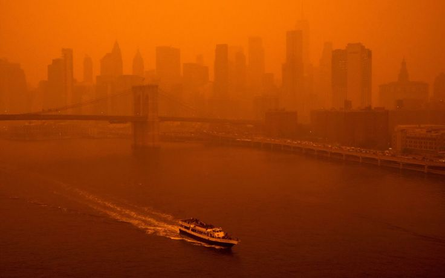
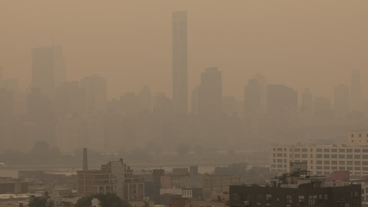
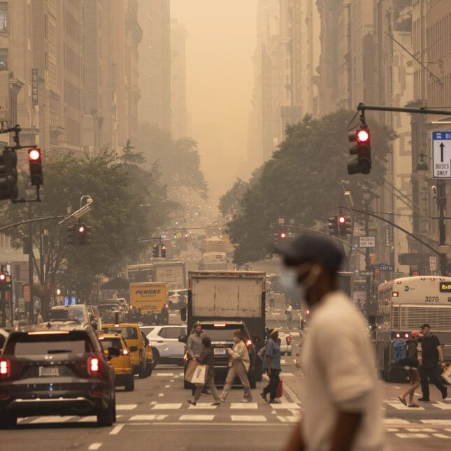
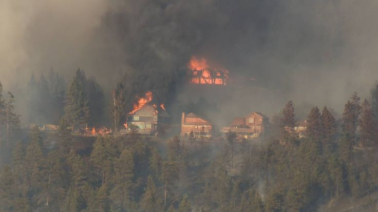
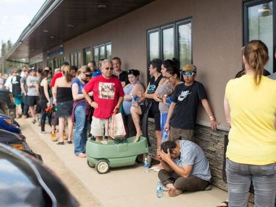
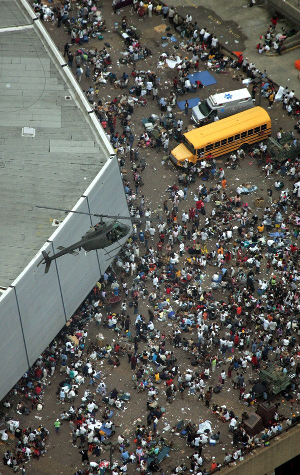
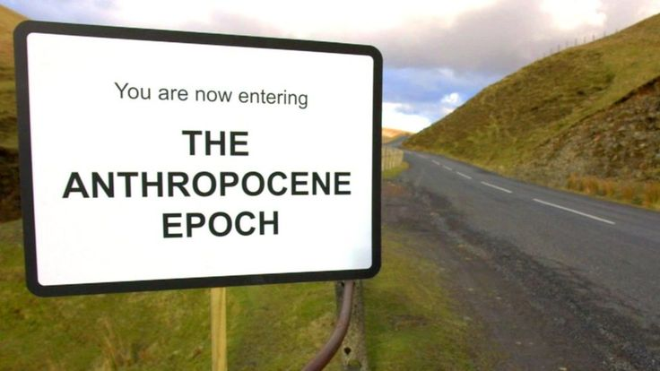

Like Centrelia, the underground fire was caused by human error and mismanagement. While Centrelia is completely evacuated and inhabitable, the continuation of forest fires have caused inequalites, which by Canada's public health service website, they are very much aware of.


Health outcomes being a large one. Many members of Centrelia started to have resperitory problems from the smoke. The same is true for wildfire smoke, which unlike Centrelia, covers a larger surface area and is more dense. Toxic chemicals also leaks into vegetation causing reproductive issues, asthma and an overall increase in mortality rates (Government of Canada 2024). Air quality alerts are a common concern, leaving many Canadians and Americans without breathable air during the summer months.


Location is very important. Those who live in rural areas are affected the most because of lack of infrastructure and evactuation methods. Indigenous communities are also likely to live rurally, impacting their health but also their way of life. They depend on the resources of the land, which Canada "recognizes" is due to colonialism. Those who lose personal property or other valuable items have to find temporary housing and are in need of financial assistance (Government of Canada 2024). Centrelia also had to be evacuated and completely abandoned as the small town could not live with the smoke, causing residents to lose homes and their safety.


Not only are these disasters man-made, but the "disasters" are created by poor infrastructure and socioeconomic disparities. Like Hurricane Katrina, Centrelia, Canadian Wildires and other modern day climate change disasters reproduce inequalities and continue to produce more disasters.
